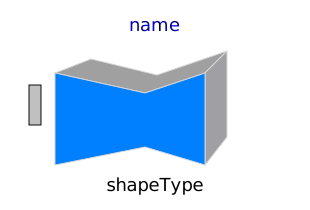
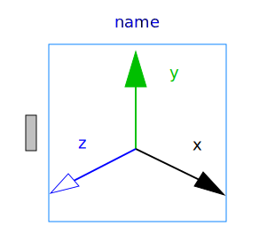
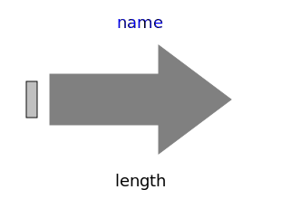
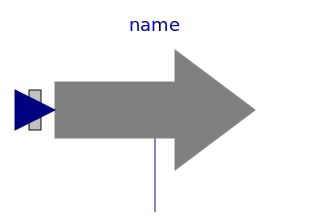
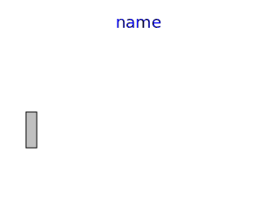
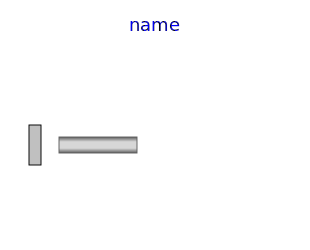
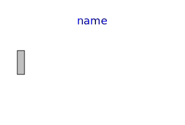

Package Visualizers contains components to visualize 3-dimensional shapes. These components are the basis for the animation features of the MultiBody library.
| FixedShape FixedShape2 |
Visualizing an elementary shape with dynamically varying shape
attributes. FixedShape has one connector frame_a, whereas
FixedShape2 has additionally a frame_b for easier connection to
further visual objects. The following shape types are
supported: |
| FixedFrame | Visualizing a coordinate system including axes labels with
fixed sizes: |
| FixedArrow, SignalArrow |
Visualizing an arrow. Model "FixedArrow" provides a fixed sized
arrow, model "SignalArrow" provides an arrow with dynamically
varying length that is defined by an input signal vector: |
| Ground | Visualizing the ground by a plane:
|
| Torus | Visualizing a torus:
|
| VoluminousWheel | Visualizing a wheel:
|
| PipeWithScalarField | Visualizing a pipe with a scalar field represented by a color
coding:
|
| Advanced | Package that contains components to visualize 3-dimensional shapes where all parts of the shape can vary dynamically. Basic knowledge of Modelica is needed in order to utilize the components of this package. |
The colors of the visualization components are declared with the predefined type MultiBody.Types.Color. This is a vector with 3 elements, {r, g, b}, and specifies the color of the shape. {r,g,b} are the "red", "green" and "blue" color parts. Note, r g, b are given as Integer[3] in the ranges 0 .. 255, respectively.
| Name | Description |
|---|---|
|  FixedShape | Visualizing an elementary shape with dynamically varying shape attributes (has one frame connector) |
| Visualizing an elementary shape with dynamically varying shape attributes (has two frame connectors) | |
|  FixedFrame | Visualizing a coordinate system including axes labels (visualization data may vary dynamically) |
|  FixedArrow | Visualizing an arrow with dynamically varying size in frame_a |
|  SignalArrow | Visualizing an arrow with dynamically varying size in frame_a based on input signal |
| Visualizing the ground (box in z=0) | |
|  Torus | Visualizing a torus |
|  VoluminousWheel | Visualizing a voluminous wheel |
|  PipeWithScalarField | Visualizing a pipe with scalar field quantities along the pipe axis |
| Visualizing a planar rectangular surface | |
| Library of functions operating on color | |
| Visualizers that require basic knowledge about Modelica in order to use them | |
| Visualizers that will be replaced by improved versions in the future (do not use them) |